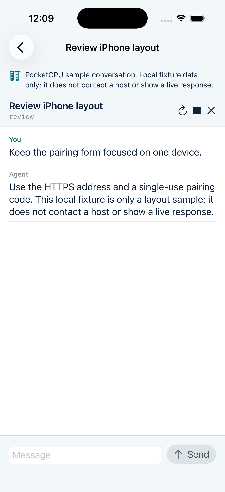
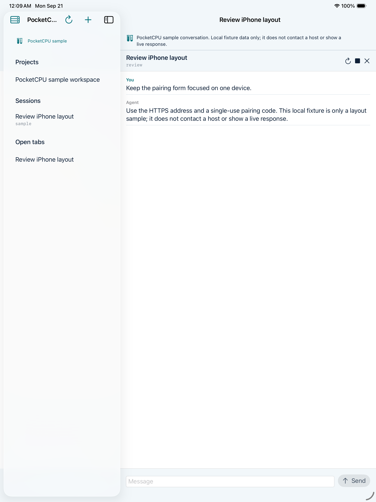

In development
AI coding sessions
on iPhone and iPad.
A native companion for OpenCode sessions running on your own computer.
Read setupPlanned: US$10 once. Lifetime app access, no PocketCPU subscription, and a free self-hosted companion. Model-provider costs are separate.

Projects, sessions,
and the next message.
Choose a project on your computer, resume an OpenCode conversation, and send or stop a request from your phone or iPad.
- Saved tabs and drafts
- Keep sessions open and unsent text saved between visits. Closing a tab leaves the conversation on your computer.
- Connection options
- Direct HTTPS, optional Tailscale HTTPS, or an experimental self-hosted relay.
- Your own host
- OpenCode runs on your computer with the model provider you configure. PocketCPU does not include hosted AI or model credits.

Development status
PocketCPU is being built as an independent native app. There is no public App Store download or consumer installer yet.
View the public projectCurrent build
iPhone and iPad text conversations, device pairing, project and session selection, send/stop, saved tabs, and drafts. The command-line companion targets macOS and Linux.
Next work
Native agent approvals and questions, general terminal access, desktop installation, real-device networking checks, and native Windows support.
Relay status
The experimental relay can read forwarded traffic. It is not end-to-end encrypted and is not offered as a public service. Tailscale remains optional.